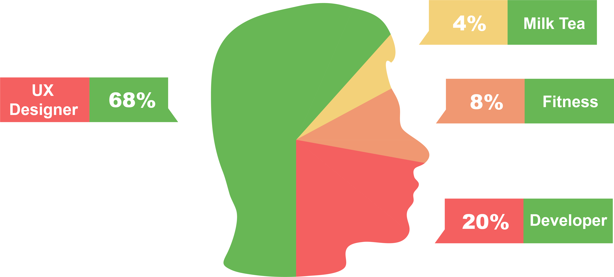

I'm a UI/UX Designer based in San Diego with a never-ending curiosity about the applications of design in different aspects of life. I thrive in fast-paced, collaborative environments where everyone is working towards a vision with purpose.
Created digital models and assets for engineering and marketing teams to be used with flagship product "Zumi"(Winner of CES Best Of 2019 Innovation Award) for a audience of 20000+.
Paper Prototyping, Adobe Illustrator, A/B Testing, WordPress, AsanaLed design of wireframes and mobile iOS app development for a new CGM biosensor that is paired through Bluetooth.
Sketch, User Flows, Adobe Illustrator, Xcode, Swift, InvisionWorked with design researchers, developers and UI/UX designers in improving the user experience of the Dexcom G6 Sensor and App.
Contextual Inquiries, Rapid Prototyping, Usability Testing, Personas, Storyboardng, Coding User Interviews, Figma, HTML, CSS, JavaScript, AtlasLed a team of designers to build a app around life coaching that would use crowd-sourced AI.
Adobe XD,Contextual Inquiries, Personas, Wireframing.Created a device from ideation to working prototype which reduced neuromuscular deterioration for Parkinsons patients.
Sketch, Adobe Photoshop, Contextual Inquiries, Ethnography, Rapid Prototyping, PersonasDesigned a app with an adaptive interface that connects seniors with volunteers helping both parties.
Adobe XD, Adobe Premiere, Adobe Photoshop, Inclusive Design, Usability Testing, Wireframing, Storyboarding, Personas